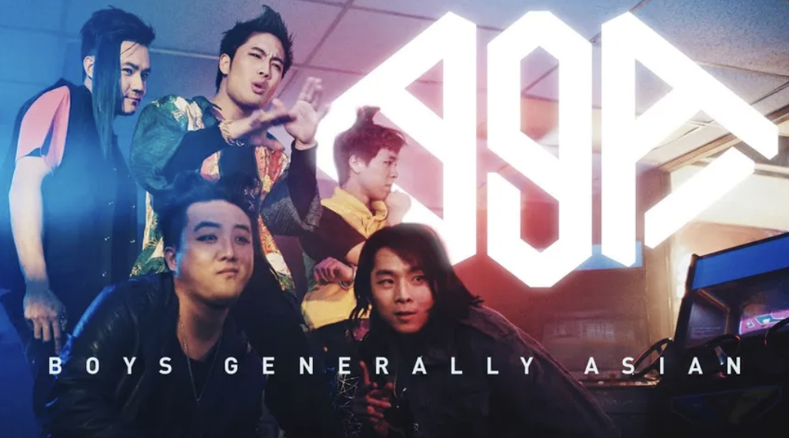
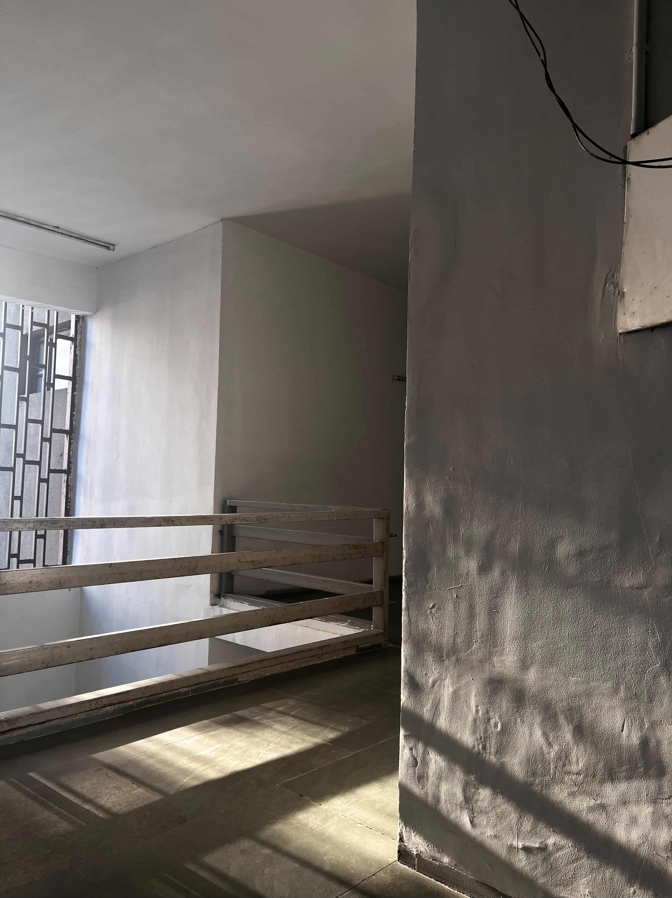
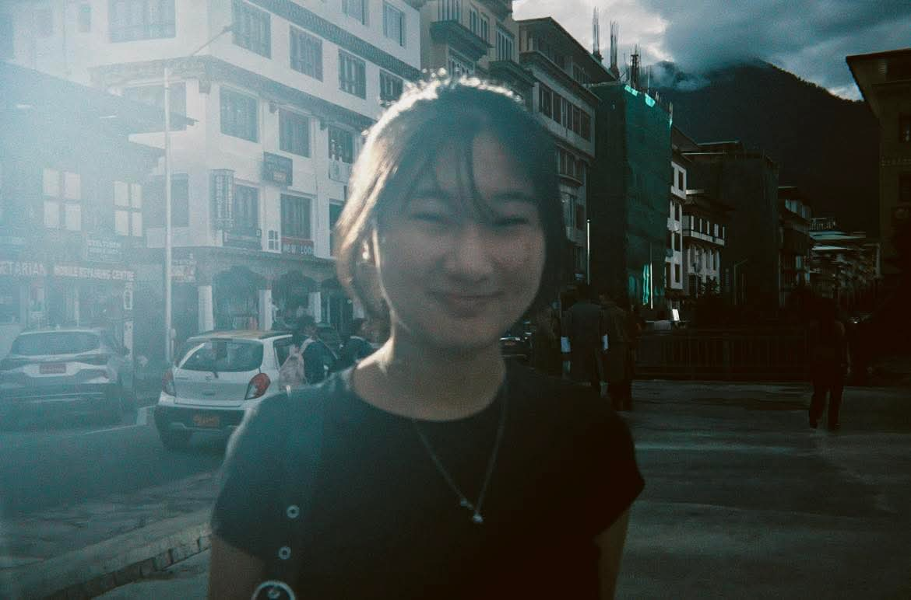

Jan 24
Muahahah I have thought of something to do and this here is the start of it. You will see it in due time, and I am excited to reveal it to you :}}}.
Hehehe you just got back from your Shanghai trip and fell asleep. I’m glad you had so much fun in Shanghai, and had a good friend to have fun with!!! I hope to have even more fun in the big red city with you someday:)
I enjoy talking to you so much, it’s so natural always, and so very fun every time we talk.
It’s only gotten easier and easier and easier.
I love you, Tshoki!!!! 🩷🩵
Jan 27
Alawwwwww baerbaerrrr gutor nawong merrrr alaaaa
But I’m talking to you right neowww so it alright and I happy :DDD

This is literally me right neowwwww. Plotting something...
Jan 30
I woke up in da middle of eepingggg
Hehehe I can hear you breathing.
You just said something in your sleep, something about “being enough” 🤔
I feel kinda weird oooOOO zum bey. My nose still blocked hahaha but other than that pretty okayyy.
Hehehe I miss you so much, my lovely.
I love how much we are able to talk these days. I look forward to calling you, and going to sleep with you every single night.
It’s honestly, da highlight of ma day, everyday. And it’ll always be the highlight.
I wish we got to spend more time in person too, but I just tell myself each day we are apart, only means we’re getting closer to being together again:D
I so excitingggg to see what foods you’re gonna cook during your break hehehe. I’m also looking forward to being able to cook for you in the future. The datshi I made last time at home was pretty darn good, I think you’d love it too.
Hearing your voice gives me so much joy. It breathes life into my veins.
Your voice is the sweetest candy, and the most melodious tune.
It’s like a song only I can truly appreciate.
I was too tired and sick yesterday to tell you, but you sounded so beautiful when you were singing for me :D
You’re the bestest most wonderful girl ever!!!!

Hahaha here’s my little attempt at drawing a lily for you:3
1 Feb
ITS THE FIRST OF THE MONTH WOOOHOOOOOO. I have a general idea laid out of what I wanna do. The website is ready. I just need to find the time to do da drawings muehhehe.
Alawwwwww baerbaerrrr gutor nawong merrrr alaaaa
But I’m talking to you right neowww so it alright and I happy :DDD

Goodnight Tshoki:)
I love you so much
anddd
I love you tooo!!!!
To the ends of the universe, and back!
🩷🩵🩷🩵
Feb 3
Is been a few days heheh
We just watched some Ryan higa music videos.
Such a fun conversation we had this entire night. You’re the best person I could’ve ever dreamt of being together with!!!
Hmmmmmmm I been thinkin about your question darchir girrrr, and I wanna write it down for you so you can always read it!
1. You’re so self confident, so sure of what you are and are capable of. It’s one of the many things I love about you. It’s always so admirable the way you say you can do something, it made me more confident in things I think I can achieve also.
2. So very self content you are. So sure of what you want, and what you deserve. Finding beauty in the everyday. The leaves, the sun, the animals, and the shadows… hehehe. I’ve come to be more wary of my surroundings too. I’ve always kinda been I think, but now I’m even more so, learning from you!!!
3. How caring you are, the love and care you exhume runs and flows deep, and far. The care not just for me, but your friends, your family, the work you do, and everything else. Everything you do and care about has elements of you within them, and that is one of the loveliest things ever.
Oh ma gaw how much I love your cute smile, the little sounds you make when we talk, your laugh. Every second with you is so special.
When I close my eyes, I see your face. When I open them, I imagine you in front of me.
You’re always with me, always and forever.
I love you, Tshoki!

Feb 5
I love shadows, the beauty in them, the silence, the subtle changes depending on the way the light hits, the small gusts of wind, little breezes. There is a poem in here somewhere but I cannor channel it right neow…I love talking to you so much baobaoooo. You my best friend.I love noticing little things about you, and all your mannerisms.Everything is dear to my heart.
I love you


shadows...
Feb 7
AHHHH awooo I gyats da so much to studier:,c. Exam from mondayyaayahyaagaya.
I wanna play Minecraft and watch movies with you all day twimeeee baobaooo.
Dator im cookin sum indoemierrrrr. It’s special chicken flavor… I hope it taste better than the stupid Nigerian one…
Hehehe but you’re on call with me right neow :D you dont kneow it yet but sometimes I be writing here while talking to you on call also hehehehe.

I think I look rather nice in this photo. Thank you for the nice photo baby:)))
Feb 9
Exams start beyi…….
Today’s was pretty good :DDD I’m happy it went well. The next ones aren’t that easy .
Valentine’s Day is coming upppapapap. I’ve had something in the works for a little bitty for a while. It been taking much time… my hands are like really shaky. You’ll see what I mean when I show it to you muahahaha
MUEHEHEHEHEH. For now I must studies….
Imagine me like how golden looks like when he’s in front of a computer lookin all sad and beat.

This drawing is so cute, so mischeavious.
Feb 13
WOOHOOOOO ITS ALMOST TIMEEE ALMOST VALENTINES
I GYATTA PUT FINAL TOUCHES TO EVERYTHING AND FINISH UP ONE MORE PROJECT RAHHHHH.
YOU JUS DROPPED THE CALL RIGHT NEOW TO GO COOK SOME THAI CHIMKEN DISH RAHHHHHH ARE YOU EXCITING??? CAUSE I AM EXCITING
IMAGININGS ME AS GOLDEN ALL PUMPED UP AND PICKING UP MALTESE!!!!!
hehehe aww my baobao ill cook all da chimken for you someday:)hehehe I told you I was working on my project for uni muahahah but I am working on this muehehheeh.I mean I did work on my research too tho but that is besides the point. also the coin is really cool babe, I think you should give one to me…
anywayyyy heheheh I cant wait to show you this muehehheeh.
I love you baby:)))

My lovelier